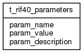

| Table: rif40.t_rif40_parameters | |||
| RIF40 parameters. Use this table for INSERT/UPDATE/DELETE; use RIF40_PARAMETERS for SELECT. User needs RIF_NO_SUPPRESSION granted as a role to see unsuppressed results | |||
| Size: medium, Select frequency: medium, Update frequency: medium | |||
| Columns | |||
| Name | Type | Constraints | Description |
| param_name | VARCHAR (30) | NOT NULL | Parameter |
| param_value | VARCHAR (50) | NOT NULL | Value |
| param_description | VARCHAR (250) | NOT NULL | Description |
| Primary key | |||
| Name | Columns | Description | |
| t_rif40_parameters_pk | param_name | ||
| Grants | |||
| Role | Actions | ||
| rif_manager | select, insert, delete, update | ||
| rif40 | select, references, insert, delete, update | ||
| PUBLIC | select | ||
